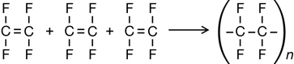
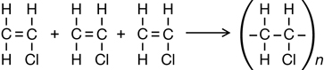
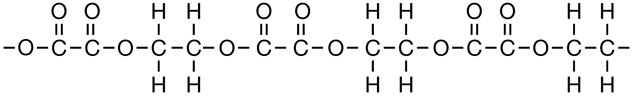

Module 6—Petrochemicals
 Self-Check Answers
Self-Check Answers
Contact your teacher if your answers vary significantly from the answers provided here.
SC 3.
Section 10.5 1.

Section 10.5 2.

Section 10.5 4.
Sample solution only; answers will vary.
The convenience of plastic bags, packaging, and water pipes makes these products a beneficial use of polyethylene (polyethene). Problems arise from the disposal of these products. These products take up a lot of space in landfills and often end up in oceans and lakes where they are a serious hazard to marine life. Using biodegradable plastics and reusable cloth bags would help reduce these problems.
Section 10.5 5.
Responses will vary. Remember to add the information you collect to your course folder.
Section 10.5 6.
Nylon toothbrushes are less expensive than “natural” toothbrushes and are more durable. However, nylon toothbrushes are not biodegradable, and it may be true that they harbour a lot of germs because they last for such a long time.
Section 10.5 7.

Section 10.5 8.
- Pasta, containing the polysaccharide starch, has the synthetic analog cellulose triacetate, also a polysaccharide.
- Meat, containing the polyamide protein, has the synthetic analog nylon, also a polyamide.
- Butter, containing the “polyester” fat, has the synthetic analog Dacron, a polyester fabric.
Section 10.5 9.
- Desirable properties of a polymer used for potting material are the polymer's ability to absorb many times its own weight in water and to make the absorbed nutrients available to the plants.
- To test water absorption capacity, one could soak equal masses of the two polymers in water, filter each mixture to drain off excess water, and then reweigh the polymers. The mixture with the greater mass would be the best one with regards to absorption capacity.
To test the ability to release nutrients, one could grow several identical plants in two identical containers, each filled with a different polymer. The polymer with the plant that grew the best over time would be the best one with regards to the ability to release nutrients.
Section 10.5 10.
Sample solution only; answers will vary as these are opinions and there can be no right or wrong answer.
Organic usually refers to how food is grown or raised. Organic products are generally healthy and environmentally friendly, so the term is valid.
Natural normally describes something as it occurs in nature. An example of the term’s use is “natural spring water” as opposed to tap water. The term is not very meaningful and so may not be valid.
Chemical is associated with synthetic products like artificial sweeteners. The word chemical in this context has negative connotations and is usually avoided in advertising consumer goods. It may not always be valid to interpret chemical negatively.
Section 10.5 11.
Starch is metabolized by humans and so has food value. Cellulose, on the other hand, cannot be metabolized by humans because their digestive systems do not have the necessary enzymes to break cellulose down. Because of this, cellulose has virtually no food value.
Section 10.5 12.
Sugars are very water-soluble in sap because they are relatively small molecules, are polar, and exhibit hydrogen bonding. Wood is primarily cellulose, a polymer whose rigid structure of layered sheets makes it insoluble.
Section 10.5 13.
Plastic bags are superior in some ways to paper bags. The polymer structure of the plastic is stronger than the polymer structure of the fibres in the paper. Plastic bags are also lighter and cheaper than paper bags. However, paper bags are more eco-friendly than plastic bags because they are biodegradable.
Section 10.5 14.
- addition
- condensation
- condensation
- condensation